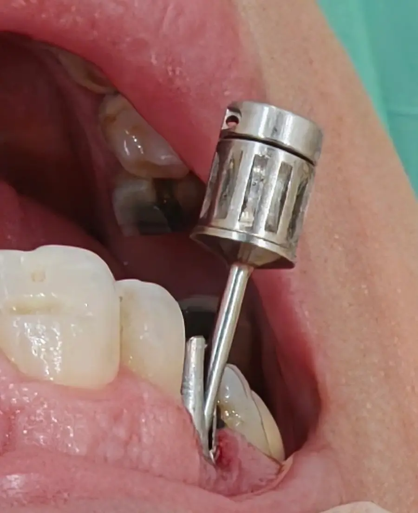
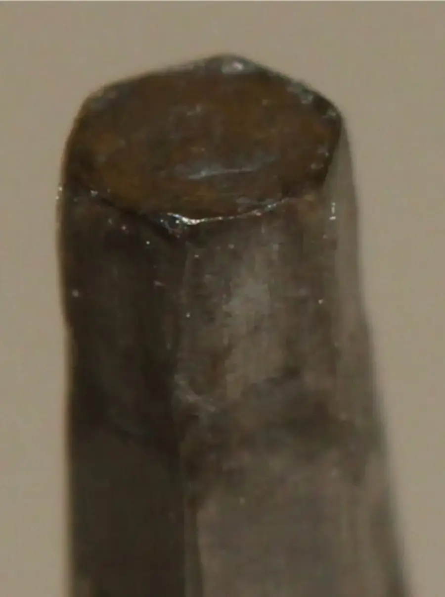

نسخه استخراجشده؛ ترجمه یا تأیید علمی انجام نشده است. وضعیت: captured
بیمار روکش ایمپلنت کانین را تحویل گرفته است. تنها یک هفته پس از تحویل، با شکایت از شل شدن پیچ روکش مراجعه کرده است. علت این شل شدن زودهنگام چیست؟

این کیس بهصورت یک چالش مطرح شده و پاسخش منتشر نشده است. آن را پرسشی باز نگه دار و با دقت در همین تصویر دربارهاش فکر کن.
یکی از سختترین مشکلات و کامپلیکیشنهای پیچ در پروتزهای متکی بر ایمپلنت، پیچی است که تورک گرفته و گل آن هرز شده؛ یعنی نه سفت میشود و نه باز.
مستقل از اینکه برای حل این مشکل چه راهکارهایی وجود دارد، دلیل این اتفاق میتواند موارد متعددی باشد:
یکی از شایعترین دلایل هرز شدن گل پیچ، استفاده از آچارهای کهنه یا مستعمل است: آچارهایی که بهدرستی در گل پیچ تطابق پیدا نمیکنند و هنگام تورک دادن باعث دفورمیشن و آسیب جدی در گل پیچ میشوند.

یکی از اولین نشانههای این اتفاق، گیر کردن آچار در گل پیچ پس از تورک دادن و سختی جدا شدن آچار از گل پیچ است.
سلامت ابزار بخشی از سلامت درمان است: تقریباً همهی ریشههای هرز شدن گل پیچ پیش از لحظهی خرابی قابل پیشگیریاند.